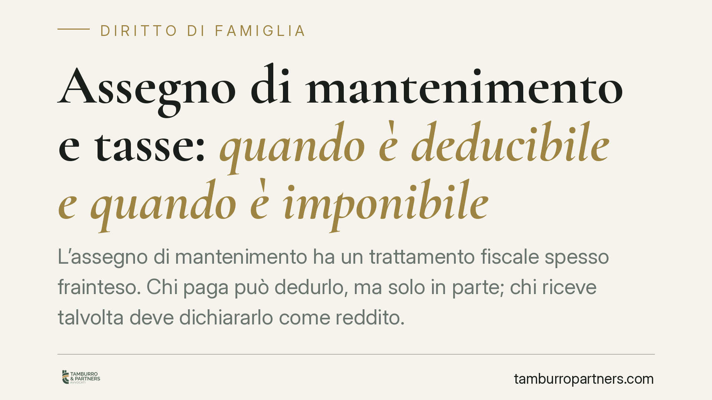

Assegno di mantenimento e tasse: quando è deducibile e quando è imponibile
L'assegno di mantenimento ha un trattamento fiscale spesso frainteso. Chi paga può dedurlo, ma solo in parte; chi riceve talvolta deve dichiararlo come reddito. La distinzione tra assegno al coniuge e ai figli è decisiva. Analizziamo le regole del TUIR, la prassi dell'Agenzia delle Entrate e gli orientamenti della Cassazione per evitare errori in dichiarazione.

Il principio di simmetria: deducibilità e imponibilità
Il trattamento fiscale dell'assegno di mantenimento poggia su una logica di simmetria. Ciò che è deducibile per chi lo versa è, di regola, imponibile per chi lo riceve. In altre parole, la stessa somma non può sfuggire due volte al fisco.
L'art. 10, comma 1, lett. c) del Testo Unico delle Imposte sui Redditi (d.P.R. 917/1986, TUIR) consente al coniuge o all'ex coniuge obbligato di dedurre dal proprio reddito complessivo gli assegni periodici corrisposti al partner, se stabiliti dal giudice. "Dedurre" significa sottrarre l'importo dal reddito imponibile, riducendo così la base su cui si calcolano le imposte.
Simmetricamente, l'art. 50, comma 1, lett. i) del TUIR qualifica tali assegni come redditi assimilati a quelli di lavoro dipendente in capo al beneficiario. Chi li riceve deve quindi dichiararli e vi paga l'IRPEF.
Le tre regole pratiche per destinatario
Il punto critico è capire *a chi* è destinato l'assegno. Qui la disciplina cambia radicalmente.
Assegno al coniuge (o ex coniuge). È deducibile per chi paga e imponibile per chi riceve, purché abbia carattere periodico e sia disposto dal giudice. È l'unica ipotesi in cui la simmetria opera pienamente.
Assegno per i figli. Non è deducibile per il genitore che lo versa, né imponibile per il genitore che lo riceve per conto del figlio. Il mantenimento dei figli è considerato un dovere ordinario, non un onere fiscalmente rilevante. Nessun beneficio, quindi, per chi paga.
Assegno indistinto (coniuge e figli insieme). Quando il provvedimento del giudice non separa la quota destinata al coniuge da quella per i figli, occorre un criterio di riparto. L'art. 3 del d.P.R. 42/1988 — norma di attuazione del TUIR — prevede che, in mancanza di diversa indicazione, l'assegno si considera destinato per metà al coniuge e per metà ai figli. Solo la parte imputata al coniuge (il 50%) è deducibile e, specularmente, imponibile.
Consigliamo di curare fin dall'accordo o dal ricorso la distinzione espressa delle quote: un dispositivo chiaro evita la ripartizione forfettaria e contenziosi con l'Agenzia delle Entrate.
La periodicità è un requisito, non un dettaglio
La deducibilità richiede che l'assegno abbia carattere periodico. Su questo la giurisprudenza di legittimità è netta.
La Corte di Cassazione, con la sentenza n. 13029/2013, ha ribadito che solo gli assegni corrisposti con periodicità rientrano nel regime dell'art. 10 TUIR. In precedenza, l'ordinanza n. 10323/2011 aveva confermato l'esclusione dal beneficio delle prestazioni prive del carattere continuativo richiesto dalla norma.
L'una tantum: nessuna deduzione
Merita attenzione l'assegno una tantum, cioè il pagamento in un'unica soluzione previsto in sede di divorzio in luogo dell'assegno mensile.
Poiché manca il requisito della periodicità, l'una tantum non è deducibile per chi lo versa e non è imponibile per chi lo riceve. Chi opta per la liquidazione in unica soluzione, quindi, rinuncia al beneficio fiscale in cambio della definitività del rapporto economico.
È una scelta che va valutata con attenzione: il risparmio d'imposta perso può essere significativo su importi elevati e su più annualità. Prima di accettare o proporre un'una tantum, consigliamo di quantificare il costo fiscale complessivo dell'operazione.
Cosa fare in concreto
- Verifica il provvedimento: controlla che l'assegno sia stabilito dal giudice e abbia carattere periodico. Solo così è deducibile.
- Distingui le quote: pretendi che l'accordo o il dispositivo separi la parte per il coniuge da quella per i figli. In mancanza, scatta il riparto 50/50 dell'art. 3 d.P.R. 42/1988.
- Conserva le prove di pagamento: bonifici tracciabili e ricevute sono indispensabili per giustificare la deduzione in caso di controllo.
- Indica il codice fiscale del beneficiario in dichiarazione: è richiesto per la deduzione degli assegni al coniuge.
- Valuta l'una tantum in prospettiva fiscale: prima di scegliere la soluzione in unica soluzione, confronta il beneficio perso con la certezza ottenuta.
*Contributo informativo a cura di Tamburro & Partners - Avv. Giuseppe Tamburro. Non costituisce parere legale.*
Ogni famiglia ha il suo equilibrio.
Separazione, divorzio, affidamento, assegno: se vuoi un confronto riservato su una specifica situazione, scrivi allo studio. Ti rispondiamo entro un giorno lavorativo.